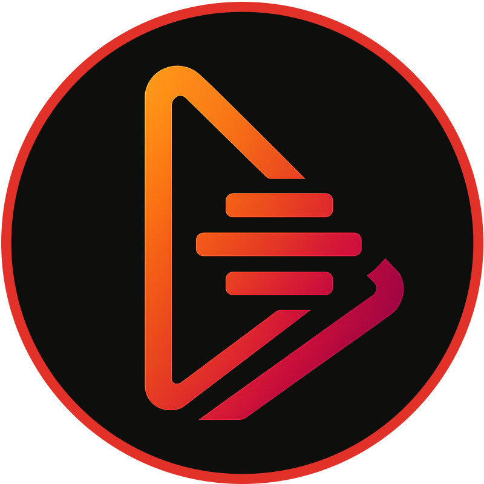

Agent-native
Tools are structured, read-only, schema-validated, and bounded for automated workflows.

Native MCP server for AI agents
Real-time financial intelligence for crypto public companies: alpha signals, covenant stress, peer ranking, risk distribution, daily changes, and SEC XBRL fundamentals.
A smart assistant that watches crypto public companies like Coinbase, Strategy, MARA, and RIOT, then tells your agent how healthy they look and where financial stress is building.
Tools are structured, read-only, schema-validated, and bounded for automated workflows.
Focuses on crypto public companies, stress signals, fundamentals, and relative risk context.
Supports a free starter tier and production x402 payment requirements without subscriptions.
@DeltaSignal alpha_signals ticker:COIN
@DeltaSignal top_stressed tickers:MARA,RIOT,HUT,CLSK
@DeltaSignal covenant_stress ticker:MSTR
@DeltaSignal peer_ranking ticker:MARA
@DeltaSignal company_fundamentals ticker:COIN
When a crypto company borrows money, lenders set rules called covenants. Covenant stress estimates how close the company is to breaking those rules. Higher stress can mean higher risk of forced repayment, dilution, restructuring, or bankruptcy.